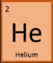
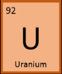
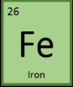
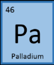
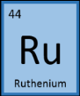
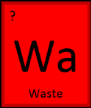

What types of Asteroid are there?
| Mining Analysis: | Asteroid type C (Carbonaceous): common (75% of all asteroids); rich in Fuel |  |
| Mining Analysis: | Asteroid type S (Silicaceous): rare (17% of all asteroids); contain precious metals |  |
| Mining Analysis: | Asteroid type M (Metallic) very rare (8% of all asteroids); contain common metals |  |
What resources can we get from Asteroids?
 |
Helium: | Nuclear fusion fuel for maximum propulsion! |  |
|
Uranium | Fuels the latest nuclear fission engines. |  |
|
Hydrogen | The go-to rocket fuel. |  |
|
Water | Ingredient for rocket fuel also used in life support and radiation shielding. |  |
 |
Nickel | Withstands high temperatures, crucial for rocket construction and repair. |  |
|
Aluminium | Quite common but very useful due to its toughness, light weight and ease of recycling. |  |
|
Magnesium | Very lightweight so is used in alloys to improve mechanical properties. |  |
|
Silicon | Everything has a microchip in it, every microchip needs silicon. |  |
|
Iron | Used for manufacturing large hardware in space colonisation. |  |
|
Nitrogen | Many applications from growing plants to making electronics. |  |
 |
Platinum | Found in large quantities. Useful as a catalyst and retains its high value on Earth. |  |
|
Iridium | Used in the power generators that keep your lights on. |  |
|
Palladium | Helps run your electronics. Poor man's platinum. |  |
|
Gold | Shiny! It's also used in your space helmet's sun visor. |  |
|
Rhodium | It's really rare on Earth. People still love something that's one of a kind. |  |
|
Ruthenium | Used in small quantities to make solar panels that keep satellites floating. |  |
 |
Space waste | Not a complete waste. Can be used to build houses back on Mars. |  |
The History of APE Mining Corp (Game)
At 11.00 BST on Saturday 12 April 2014 at The Met Office, Exeter, England we accepted the ASTEROID PROSPECTOR Space Apps Challenge to develop a game to travel across the solar system going from asteroid to asteroid.
We used an open source physics engine PhysicsJS to create the game.
An existing open-source demo of the classic game Asteroids was modified.
Using GitHub allowed us to collaborate and instantly share within our project group and beyond.
We hope that students interested in game development will use our code to learn and develop their skills.
Additional graphics were designed using available software. You could use Fireworks, Illustrator, GIMP or Inkscape.
The back story was created and game play discussed. It was important to us that the game created curiosity about asteroids and the future potential for asteroid mining. The types of asteroids, their composition and the resources they contain were researched. We used some great websites along the way:
Information about the elements which could be mined were again researched using websites including the Royal Society of Chemistry. We were pleasantly surprised by how many references there were to space travel.
Ideas: Past, Present and Future!
Asteroids in our solar system contain commercially-valuable resources. They also contain resources that offer potential value to humanity. They may be valuable to the global economy as Earth’s finite resources begin to dwindle. Future space exploration might use these in-space resources for radiation shielding, life support, growing food, 3D printing spare parts, etc. By using resources found at or on the way to a destination, a space craft doesn’t bring need to bring with it from earth everything that will be used during its entire mission. This reduces the amount of mass, space, and cost in launching and transporting those resources from Earth.
Asteroids may be useful for the operation of commercial ventures in space (metals, minerals, and volatiles), such as tourism (hotels or tours), energy production (like beaming solar energy to Earth), manufacturing of consumer goods, building communication relay platforms, supporting mining operations, etc. The resources from asteroids may be used in place,transported through space to support activities elsewhere, or returned to Earth. Asteroids could potentially provide a “space taxi” approach to moving between two planets (i.e. Earth and Mars).
The game could be as simple or as complex as the developers wish and have time to develop. More complex is not always better. The following are ideas that could be incorporated into the game at the developer’s choice.
- Start location options: the Earth, the Moon, Mars, inside the Asteroid Belt, etc.
- Objective options: 1) to travel furthest from the starting point, 2) to travel around the Sun within the Asteroid Belt, 3) to get back to Earth from another planet/place, 4) to reach a settlement on Mars or Titan, 5) to gather the most valuable collection of resources, 6) to save the Earth from an impending asteroid impact, 7) to supply an industry that terraforms Mars, 8) to explore the solar system and beyond.
- Asteroid field options: constant each time the game is played; varied each time the game is played; changes as game passes and bodies move around the sun, etc.
- Mission type options: human; robotic; both.
- Starting capital and material options: player is given a standard or randomly selected set of equipment (like mining equipment) and other resources are made available; the player buys a selection of these with a limited amount of startup cash
- Vehicle design options: player is given a set vehicle or can choose between vehicles that vary in propulsion system, resource storage capability, mass, etc.; players can buy or manufacture mining equipment, factory equipment, etc.
- Mining: player can mine metals for manufacturing new equipment, volatiles like ice for life support or to make rocket propellants, soil to extract oxygen from the minerals for life support, etc.
- Manufacturing: player can make propellants from water or other volatiles, refine metals from minerals to manufacture equipment, print solar cells from regolith (soil) for energy, 3D print metals and plastics and electronics, etc.
- Expending resources: propulsion, transportation of resources the to Earth or elsewhere for sale, used in extra-terrestrial industry, life support, maintaining ship, etc.
None of the options above are required; they are listed as a starting point for considering approaches to development. It is not an all-inclusive list; there are many ways to set up an asteroid prospecting game.
Additional variations could include:
- Survival option: use the resources to survive and make it to the destination.
- Planetary Defense option: if an asteroid is potentially hazardous, receive extra points or payment from the people of Earth for pushing the asteroid into a safe orbit. Possibilities include: 1) if a big asteroid hits Earth, the game is over, 2) if a small asteroid hits Earth, the player is penalized, 3) the player must decide how to push each asteroid (kinetic impact, gravity tractor, nuclear explosion, etc), 4) if choose a nuclear explosion on the asteroid, it is then unavailable for mining due to radiation, 5) if choose to mine the asteroid, there is a risk of it hitting Earth
- Space Tourism option: build outposts and hotels on the asteroids or planets; set up a transportation system with refueling stations to take people there
- Exploration option: visit destinations of interest and make discoveries along the way.